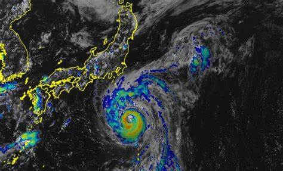

Nagbagyo sa Japan
Posted on August 22, 2024

Hundreds of thousands of people are being advised to evacuate in parts of Japan, with some homes losing power on Friday, as Typhoon Ampil approaches the east coast near the capital.
The storm, located 121 nautical miles southeast of Yokosuka, Greater Tokyo, has intensified to the equivalent strength of a Category 4 hurricane, bringing winds of up to 212 kilometers per hour (131 mph) as it moves north at 18 kph (11 mph), according to the Joint Typhoon Warning Center (JTWC).
Ampil has rapidly intensified over the past two days, partly because it moved over very warm water – meaning more moisture in the air to fuel the typhoon. It could strengthen further in the next 12 hours, with the storm reaching peak intensity as it passes by Japan.
Init napud ang Philippines
Posted on August 21, 2024
This is the content of my second blog post. Feel free to add more content and customize it as needed.
Alice Guo Away
Posted on August 20, 2024
TAn ex-mayor in the Philippines, Alice Guo, who is accused of spying for China and facilitating criminal activities like human trafficking and illegal gambling, has fled the country, prompting outrage. President Ferdinand Marcos Jr. vowed accountability after it was revealed that Guo, who had been under investigation and ordered to testify before a Senate panel, managed to leave the Philippines undetected a month ago. Guo, who had connections to scam operations disguised as online casinos, has denied the allegations, but her departure underscores significant corruption within the justice system. Her escape has sparked a backlash, particularly from Senator Risa Hontiveros, who criticized the failure of immigration authorities to prevent her from fleeing. The incident occurs against a backdrop of increasing tensions between the Philippines and China, particularly over territorial disputes in the South China Sea.